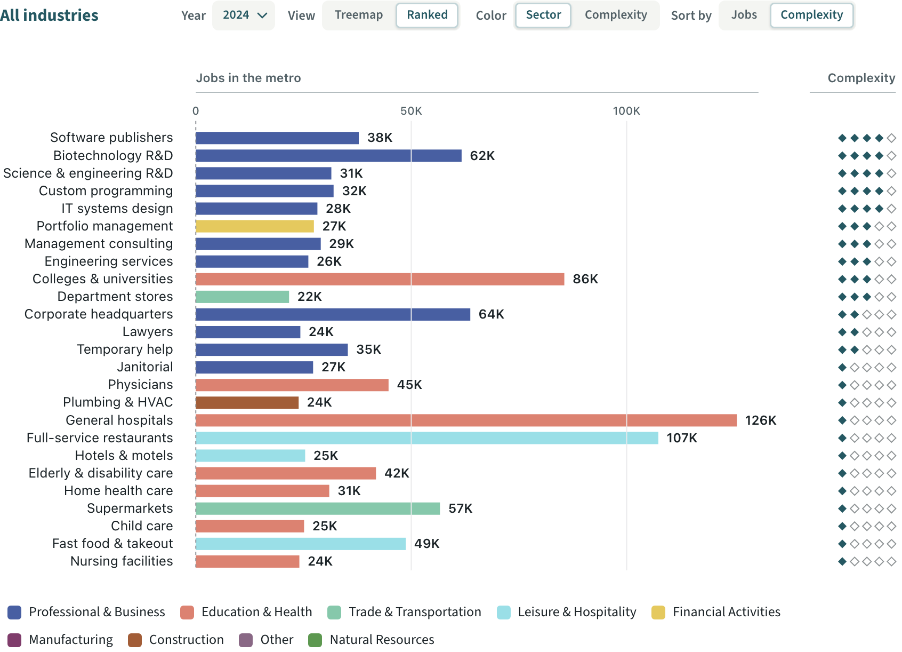
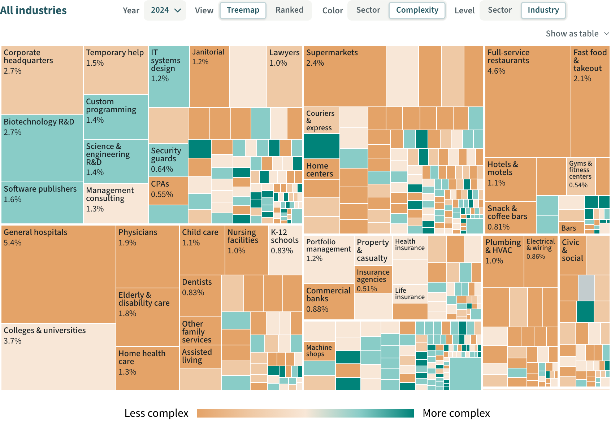
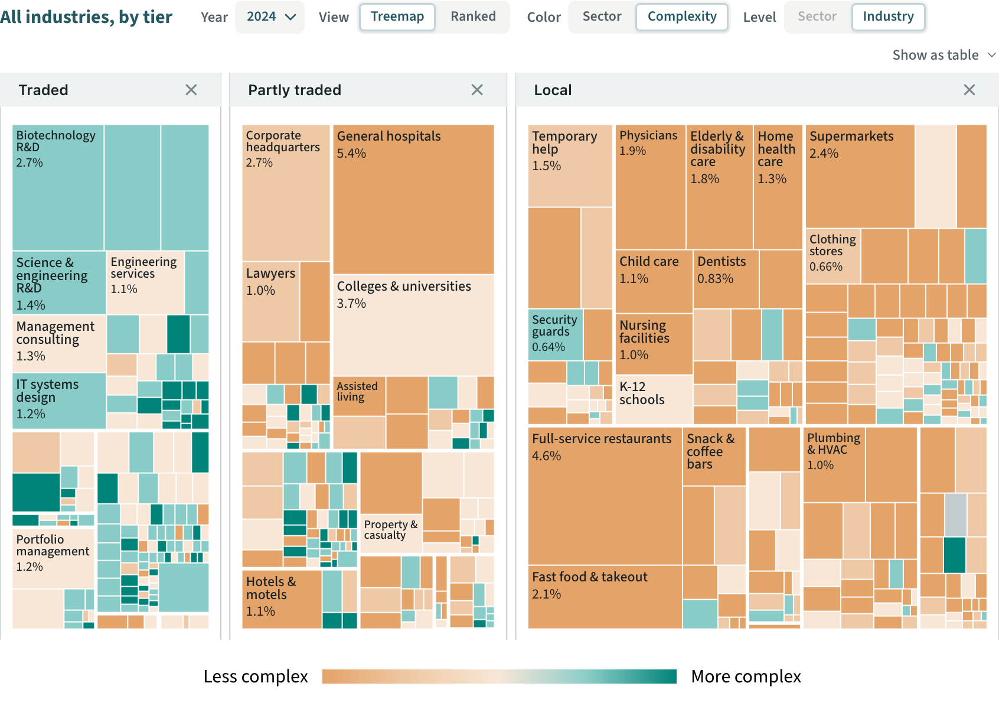
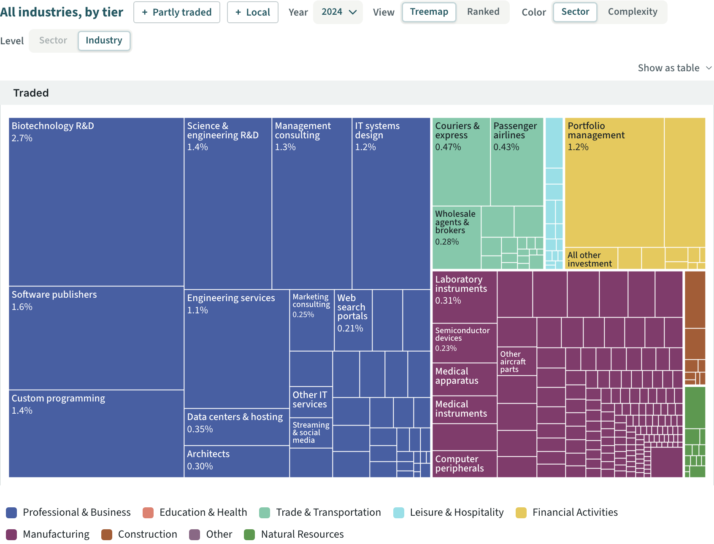
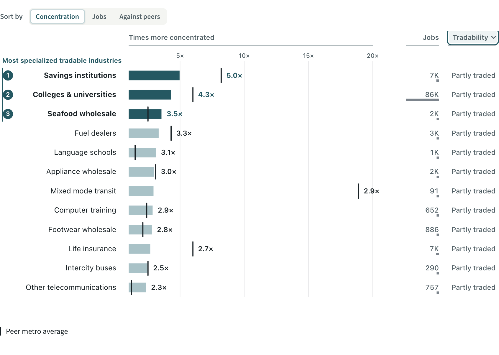
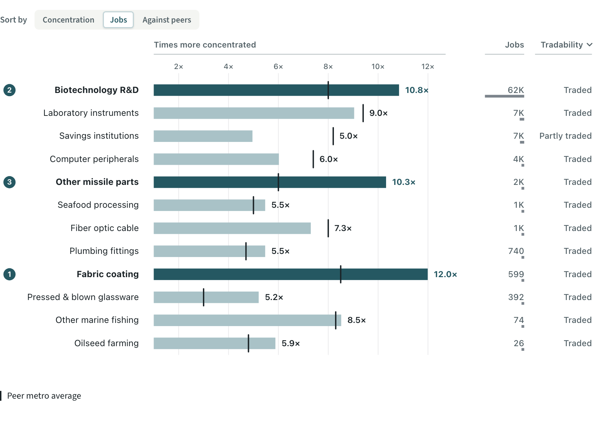

Each Metro Industries beat holds answers that only show under some setting of the controls, and most readers never find them. This page proposes six questions, two per beat, and three ways to put them in the text column. Every number was recomputed from the 2024 data file, and every view was checked on the live page; the pictures are captures of the real figure in that view.
Sketched 2026-10-01. Nothing here is in v-5 yet.
Part 1 · The questions
A question earned its place only if its answer is true in the data, visible on screen in a view the controls can reach, and not already said by the beat's own paragraph. The first question in each pair is the stronger.
Beat 1 · What does the metro do for a living?
Are the metro's biggest industries also its most complex?stronger
Sets View: Ranked · Sort by: Complexity
No. Sorted by complexity, general hospitals, the largest industry with 126K jobs, falls to 17th of the 25 bars, and full-service restaurants to 18th. Software publishers, only 10th by size, leads. None of the 25 largest reaches the fifth diamond.

What carries it: the two longest bars sit two thirds of the way down with one diamond each; the top five rows are short navy bars with four. Bar length visibly has nothing to do with position.
Which of the two largest sectors holds the metro's complex work?
Sets Color: Complexity
Professional & business. About 45% of its jobs are in the two most complex steps, the teal cells: biotechnology R&D, software, programming. In education & health, a sector almost the same size, it is about 4%, and the block is nearly all orange.

Needs: under this colouring the sector key gives way to the ramp, so the map no longer names its blocks. The paragraph's two sector phrases still outline their blocks on hover, so the answer should name the sectors by position, or carry the same phrases.
Left out of beat 1, and why
How many jobs are in the most complex industries? True (3.4% of jobs on the top step), but the view cannot show it: the darkest cells are small and unnamed, and no share per step is printed.
Which sector has the most complex mix? Manufacturing, on the numbers, but it is 6% of jobs and the answer needs a zoom to see. Weaker than the two kept.
Have the complex industries grown since 2014? The arithmetic works (+65% among the largest), but the 2014 industry rows are estimates built from group totals, so the answer would rest on them.
Beat 2 · How tradable is the metro's work?
Is the work the metro sells outside also its most complex work?stronger
Sets Color: Complexity
Largely, yes. About 63% of traded jobs sit in the two more complex steps, against 9% of partly traded jobs and 6% of local jobs. The Traded ground turns teal and cream; the other two stay mostly orange.

Needs: the percentages are printed nowhere on the chart, so the answer text carries them. The "What is economic complexity?" explainer only comes forward on beat 1, so this answer wants a one-line gloss of complexity.
What does the metro actually sell outside its borders?
Sets Traded only (the Partly traded and Local grounds closed)
Mostly knowledge services, not goods. Professional & business services are 61% of the 522,000 traded jobs, manufacturing 21% and finance 9%. Biotechnology R&D, with 62,000 jobs, is the largest single piece.

Mind: the percentages printed in the cells stay shares of all metro jobs, not of traded jobs, so 61 / 21 / 9% are read from area. The two chips beside the title bring the other grounds back, and push the Level control to a second line.
Left out of beat 2, and why
Do the metro's biggest employers sell outside it? True and visible in the Ranked view (8 of the 25 largest are traded), but the weakest of the sound ones.
Do hospitals and universities count as work sold outside? Partly: none of education & health is in the Traded tier. It needs the sector key's "Only", and the answer turns on a tier cut that universities sit right on.
Is the metro selling more outside than ten years ago? Traded jobs rose 14%, but again on the estimated 2014 rows.
Beat 3 · Which tradable industries is the metro most specialized in?
Where are the universities on this list?stronger
Sets Tradability: Partly traded only
Just below it. Colleges and universities are 4.3 times the national rate on about 86,000 jobs, but the list cuts off at 5.0 times. Narrowed to partly traded work, they come second.

Mind: the filter has no setter of its own yet, and it is not reset on leaving the beat today; both would need building. One peer tick at 18.9× stretches the axis and squeezes the bars.
How many people work in these twelve specialties?
Sets Sort by: Jobs
About 86,000, and one industry is most of it. Biotechnology R&D is 62,000. The other eleven together employ about 24,000, about 1% of the metro's jobs.

The weakest of the six. It extends a point the paragraph already makes ("concentration is not size"), and the totals are printed nowhere on screen. I would ship beat 3 with one question, or keep this as the second.
Left out of beat 3, and why
Where is the metro ahead of its peer metros? The screen and the data disagree: the "Against peers" view shows the metro ahead in 8 of the 12, the data file's own peer figures say 3. The peer ticks on this beat are still generated by the prototype. Worth fixing before any question points at it.
Is any local work unusually concentrated here? True on the numbers, but the axis rescales so the local bars look as long as the traded ones did.
Was biotech this dominant ten years ago? The Year control is hidden on this beat, and nothing says which year is showing.
Part 2 · Three ways to present them
Three designers worked independently and arrived at the same six rules. I treat these as settled whichever look is chosen; the three variants below differ only in where the question and its answer sit.
One question at a time. The chart has one state, so asking a second question closes the first.
A question is the beat's own view plus its settings. It never stacks on what the reader had; a zoom or a hidden sector is cleared, so the written answer is always true of what is on screen.
It moves the real controls, and says which. The toggles flip as if the reader had pressed them, each one that moved is marked (here a teal rule under its label), and a line names them in the control row's own words. The reader learns where the view lives.
The answer shows only while the chart shows it. Change a control by hand and the answer closes, rather than sitting beside a chart it no longer describes.
One way back, named for where it goes. The same action from a link, from pressing the question again, and from Escape. Scrolling to the next beat does it too.
A reader who never asks loses nothing. The paragraph and the chart are as they are today.
The three mocks below are live: press a question. Each uses beat 1 and its two questions.
1Question lines, in the prose
The quietest. Each question is a plain line under the paragraph, wearing the dotted underline the page already uses for phrases that act on the chart. The answer unfolds beneath it. Nothing is added to the figure except the marks on the controls.
Metro Industries 1/3
What does the metro do for a living?
2.3 million jobs across 877 industries. Professional & business services and education & health are the two largest sectors, each about a quarter of the jobs, and trade & transportation holds another sixth.
Questions the chart can answer
Chart set to View Ranked · Sort by Complexity
No. General hospitals, the longest bar, is 17th of these 25, and full-service restaurants 18th. Software publishers, 10th by size, is at the top. Read the diamonds on the right: none of the 25 has all five.
Chart set to Color Complexity
Professional & business, the block at the top left. About 45% of its jobs are in the teal cells. Education & health, the block below it and almost the same size, is nearly all orange: about 4%.
For. Costs the least room, about 110px of column. Speaks the page's existing language for "this phrase acts on the chart". The figure stays untouched.
Against. Easy to miss: the dotted underline is only learnt by trying one. A third kind of question in the column, between the title and the "What is economic complexity?" explainer.
2A question card, in the text columnmy pick
A small white framed card under the paragraph: the figure panel's own frame in small, so it reads as the chart's territory. Each row is a question; the open one turns teal, states what it set, and gives the answer. One line under the card always leads back.
Metro Industries 1/3
What does the metro do for a living?
2.3 million jobs across 877 industries. Professional & business services and education & health are the two largest sectors, each about a quarter of the jobs, and trade & transportation holds another sixth.
Questions this chart can answerChoose one and the chart changes to answer it.
Chart set to View: Ranked · Sort by: Complexity
No. General hospitals, the longest bar, is 17th of these 25, and full-service restaurants 18th. Software publishers, 10th by size, is at the top. Read the diamonds on the right: none of the 25 has all five.
Chart set to Color: Complexity
Professional & business, the block at the top left. About 45% of its jobs are in the teal cells. Education & health, the block below it and almost the same size, is nearly all orange: about 4%.
For. Hard to miss and plainly bounded; the header says what a press will do before anyone presses. The answer sits with its question, and the reset line is always in the same place, shown even after the reader's own tinkering.
Against. The tallest: about 210px of column at rest, more when open, and beat 2 already carries the tier donut. It could be read as a second accordion like the explainer row; the white frame and the arrow in place of a chevron are the guard.
3Ask in the text, answered at the figure
The question rows sit in the text, but the answer opens as a strip on the figure, under the controls it moved and over the chart that proves it. Cause, answer and evidence stack in one place; the pressed row wears the same tint so the two ends read as one state.
Metro Industries 1/3
What does the metro do for a living?
2.3 million jobs across 877 industries. Professional & business services and education & health are the two largest sectors, each about a quarter of the jobs, and trade & transportation holds another sixth.
Ask the chart
Are the metro's biggest industries also its most complex?Changed: View, Sort by
No. Sorted by complexity, general hospitals, the largest, falls to 17th of these 25; software publishers, 10th by jobs, leads.
Which of the two largest sectors holds the metro's complex work?Changed: Color
Professional & business, top left. Coloured by complexity, about 45% of its jobs are teal; in education & health, below it, about 4%.
For. The eye is on the chart when it changes, and the answer is already there: no looking back to the text. The text column stays the shortest of the three, about 120px.
Against. The answer has to be one sentence. The strip takes about 60px of the figure, so on a short window the chart shrinks; and the panel shifts a little when it opens. On a phone, where the text sits above the figure, the pressed row and its answer are a scroll apart.
Recommendation
Ship variant 2, the question card, with the marks on the controls. The request was that readers find these views and are not confused by them. The card is the only one of the three that says what will happen before the press, keeps the question, what it set and the answer in one place, and holds the way back in a fixed spot.
Take from variant 3 the habit of opening every answer with the setting that produced it and a position in the chart ("the longest bar", "top left"), so the sentence can be checked against the picture.
Start with one question per beat if the column height in beat 2 worries you: the three marked "stronger" cover complexity against size, tradability against complexity, and what the ranking's cut-off hides.
Needs building before it can ship: a setter for beat 3's tradability filter and a reset for it on leaving the beat; a one-line gloss of complexity for beat 2; and a single "set the figure to this named view" function, so a question, the reset and a beat change all go through one door.